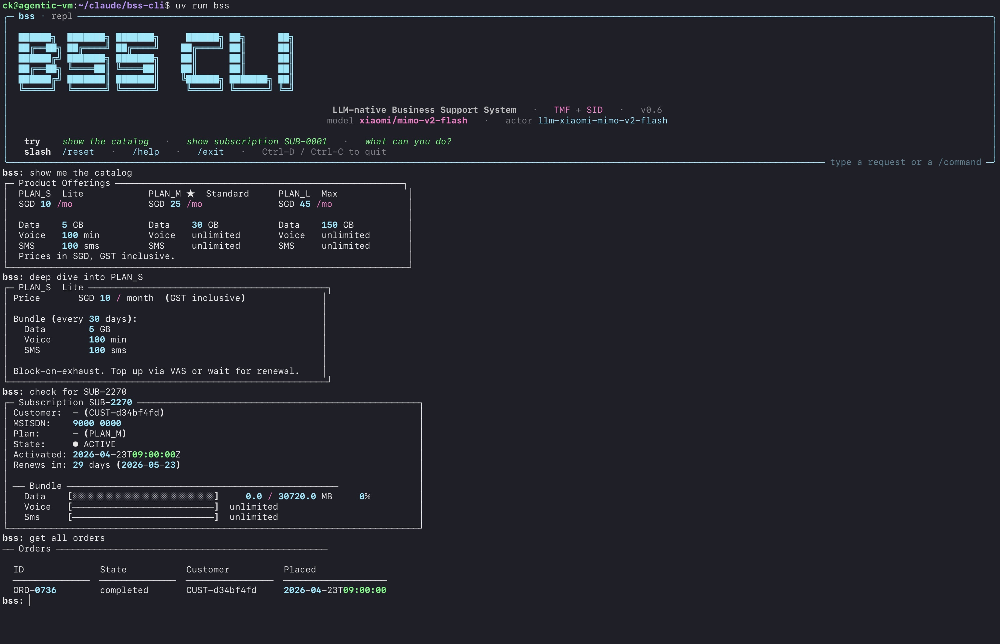
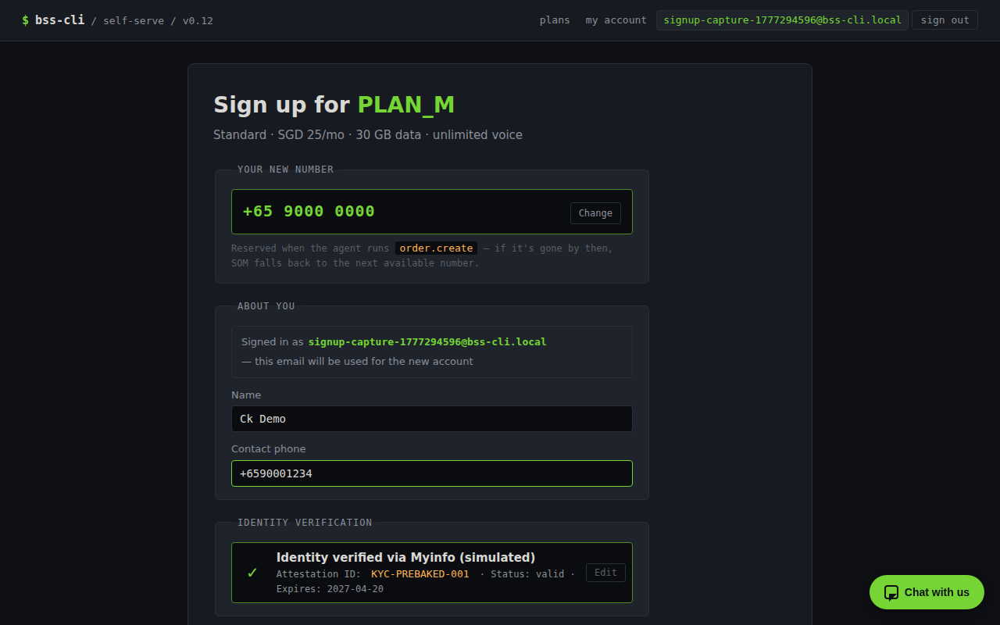
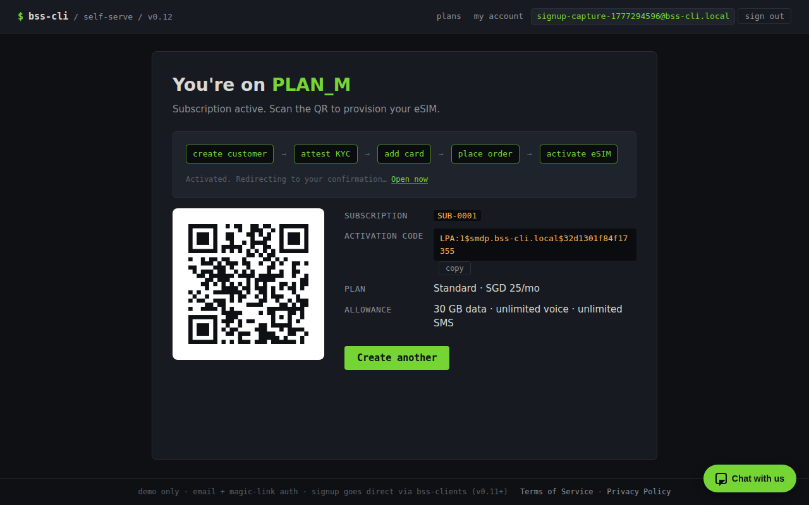
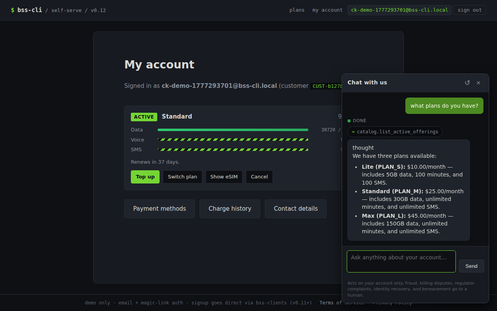
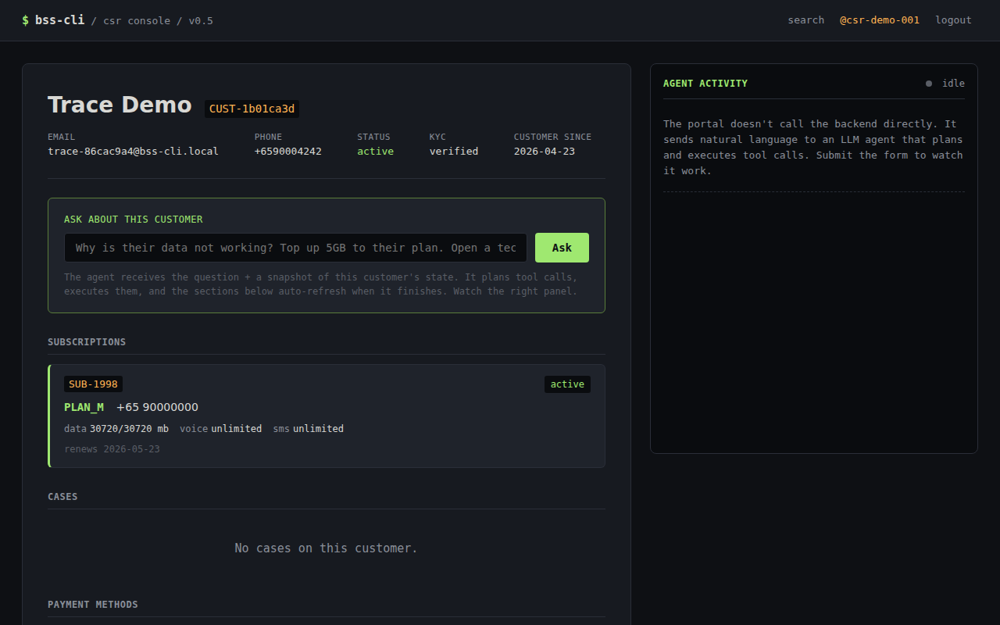
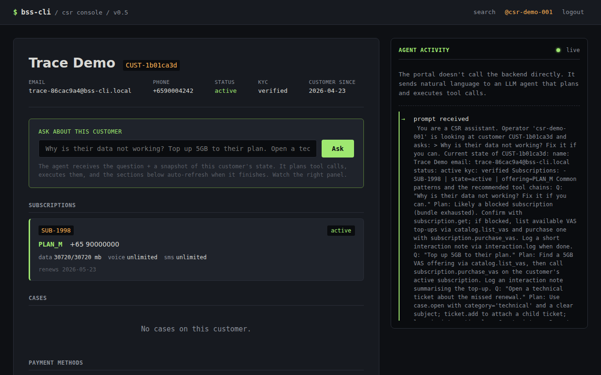

bss-cli
v0.12.0A complete, lightweight, TMF-aligned, LLM-native BSS that runs from a terminal.
What this is
BSS-CLI is a Business Support System for a small mobile prepaid MVNO, built to run entirely from a terminal. It covers the real work of running a subscriber base — CRM with case and ticket management, product catalog, commercial and service order management, a provisioning simulator, eSIM profile management, subscription and bundle balance, mediation, rating, and payment — with nine small services behind real TMF Open API surfaces.
It is opinionated. Bundled prepaid only, card-on-file mandatory, block-on-exhaust enforced at the policy layer. Every write travels through that policy layer so domain invariants hold even when an agent is driving. The payloads on the wire match the spec — camelCase, conformant, pointable at a real TMF client — not naming theater over a bespoke schema.
It is also deliberately small. The full stack cold-starts in 23 seconds, runs in under 4 GB of RAM,
and costs about $0.008 per agent dev session. That is the measurable version of "lightweight."
BSS-CLI exists as three things at once:
- A reference implementation for engineers learning telco BSS/OSS.
- A deployable MVP for a small MVNO — one
make upand you are running. - A substrate for agentic experiments — a realistic telco backend an LLM can drive end-to-end, behind a policy layer that will not let it corrupt state.
The interactive REPL

This is what "LLM-native" actually feels like in practice. The agent is not a separate surface grafted
on top of the system — it goes through the same HTTP endpoints, the same typed tool signatures, the
same write-through policy layer, and the same audit trail a human CLI user does. The only difference is
the front door: a conversation instead of a verb. When the agent tries to do something illegal, the
policy layer hands back a structured PolicyViolation with a rule code and
machine-readable context, and the agent self-corrects from that.
The seven principles
These are the soul of the project. They live in a CLAUDE.md at the repo root that reads
like a contract, and they are enforced — there is a make doctrine-check target that
fails the build if anyone calls datetime.now() in business logic instead of the injected
clock. Rules only matter if something refuses to merge when you break them.
-
1
Bundled-prepaid only. Pay upfront; a bundle either has quota or it does not. No proration, no dunning, no collections, no credit-risk modelling to reason about.
-
2
Card-on-file is mandatory. Every customer has a payment method before activation. A failed charge means no service — no exceptions, no grace period.
-
3
Block-on-exhaust. Service stops the same instant a bundle hits zero. Only two paths back: the scheduled renewal on the period boundary, or an explicit VAS top-up the customer initiates.
-
4
CLI-first, LLM-native. Every capability is a typed tool the agent can call. ASCII art is the visualization language — the terminal is the product surface, not a compromise.
-
5
TMF-compliant where it counts. Real TMF620, 621, 622, 629, 635, 638, 640, 641, 676, 678, and 683 payloads. CamelCase on the wire, conformant to the spec. You can point a real TMF client at it.
-
6
Lightweight is measurable. Full stack under 4 GB RAM, cold start in 23 seconds, p99 internal API under 50 ms. Numbers on the tin, verified in CI.
-
7
Write through policy, read freely. Every write goes through a policy layer that enforces domain invariants. The LLM cannot corrupt state even when asked to. That is the whole point.
Architecture
Nine service containers plus two portals, on a single PostgreSQL 16 with schema-per-domain (a clean
future-split seam), RabbitMQ for async events on a topic exchange bss.events, and Jaeger for
traces. Sync HTTP goes through a typed bss-clients layer. Every meaningful state change writes
to audit.domain_event in the same DB transaction as the domain write — outbox-lite,
durable. Tracing is OpenTelemetry SDK plus auto-instrumentors; the bss trace CLI command
renders an ASCII swimlane straight from Jaeger so you never have to leave the terminal.
┌────────────────────────┐ ┌────────────────────────────┐
│ CLI (bss …) │ │ Portals (HTMX + Jinja) │
│ Typer + Rich + │ │ - Self-Serve (9001) │
│ ASCII renderers │ │ - CSR (9002) │
└──────────┬─────────────┘ └──────────────┬─────────────┘
│ │
└──────────────┬──────────────────┘
▼
┌──────────────────────┐
│ bss-orchestrator │ LangGraph ReAct agent
│ 95 typed tools │ OpenRouter → google/gemma-4-26b-a4b-it
└──────────┬───────────┘
│ HTTP (typed bss-clients, X-BSS-API-Token)
┌─────────────────┼──────────────────────────────────┐
▼ ▼ ▼
┌───────────┐ ┌──────────────┐ ┌──────────────────┐
│ catalog │ │ crm │ │ subscription │
│ payment │ │ com / som │ … + … │ mediation/rating │
│ inventory │ │ provisioning │ │ (9 services) │
└───────────┘ └──────────────┘ └──────────────────┘
│ │ │
└────────┬────────┴────────────────┬─────────────────┘
▼ ▼
┌──────────────────┐ ┌──────────────────┐
│ PostgreSQL 16 │ │ RabbitMQ │
│ schema-per-svc │◀─────│ bss.events │
│ audit.domain_* │ │ topic exchange │
└──────────────────┘ └──────────────────┘
│
▼
┌──────────────────┐
│ Jaeger (OTLP) │
└──────────────────┘
Trace anything end-to-end

bss trace for-order ORD-… — the swimlane, rendered in the terminal.
Same trace, two surfaces — bss trace for the terminal, Jaeger UI for when you want to
drill down.
OpenTelemetry is the source of truth. The ASCII view is a terminal-native lens on the same spans, not a parallel tracing system; no second pipeline to maintain, nothing to drift. If something is happening in the real traces, it is happening in the swimlane — and if you need timing breakdowns, span tags, or log correlation, Jaeger is right there.
trace 4825e0bb25ae0870 766ms 125 spans 8 services 0 errors
POST /tmf-api/productOrderingManagement/v4/productOrder [com ] ████████████████████████ 766ms
└─ POST /tmf-api/customerManagement/v4/customer/CUST-022 [crm ] ██ 18ms
└─ POST /tmf-api/paymentMethod/v1/charge [payment ] ████ 34ms
└─ POST /tmf-api/serviceOrderingManagement/v4/serviceOrder [som ] ████████████████ 512ms
└─ INSERT INTO service_inventory.cfs [postgres ] ▌ 2ms
└─ POST /tmf-api/resourceInventoryManagement/v4/resource [inventory ] ███ 31ms
└─ POST /provisioning/task [provisioning] ████████████ 381ms
└─ AMQP publish bss.events provisioning.task.completed [rabbitmq ] ▌ 3ms
└─ POST /tmf-api/subscription/v1/activate [subscription] ███ 47ms
└─ AMQP publish bss.events order.completed [rabbitmq ] ▌ 3ms
The portals
Demo-grade chrome, production-shape platform. No design system, no i18n, no
accessibility audit — the portals are built to make the backend visible, not to win a UX
award. The platform underneath is the real story: a magic-link login wall (v0.8), a named-token
perimeter that flows service_identity into every audit row (v0.9), direct-API
post-login self-serve with step-up auth on every sensitive write (v0.10), and a chat surface
scoped to the logged-in customer with a hard ownership trip-wire (v0.12).
Two small server-rendered portals sit next to the CLI: a self-serve customer portal and a CSR
workbench. Both are HTMX plus Jinja, no SPA framework, vendored htmx.min.js, which
keeps the dependency surface tiny and lets the chat widget stream tool calls into the page over
SSE without fighting a client-side router.
Since v0.11, the signup funnel writes directly through bss-clients from the route
handlers — one route, one BSS write, no orchestrator hop. Wall time dropped from about 85
seconds to under five. The chat widget is the only orchestrator-mediated surface that remains,
and v0.12 narrowed its reach (see the next section).





The chat surface (v0.12)
The chat widget is one modality of access, not a privileged path. It calls the same typed tools through the same policy layer as the CLI — just through a tighter prompt-visible window. The architectural point is the chokepoint: the LLM cannot reach a tool the customer's direct UI doesn't already expose. If the chat ever has a capability the dashboard doesn't, that's a doctrine bug, not a feature.
The window is a tool profile, customer_self_serve — sixteen curated tools:
eight read wrappers (subscription.list_mine, get_balance_mine,
usage.history_mine, etc.), four write wrappers (vas.purchase_for_me,
schedule_plan_change_mine, cancel_pending_plan_change_mine,
terminate_mine), three public catalog reads, and one escalation tool
(case.open_for_me). No *.mine tool accepts a customer_id
parameter; the actor is bound from auth_context.current() and a startup self-check
refuses to boot if any signature drifts.
customer chat ──▶ ┌─────────────────────────────────────────┐
│ Layer 1 — server-side policies │
│ (the primary boundary, unchanged) │
├─────────────────────────────────────────┤
│ Layer 2 — *.mine wrapper pre-check │
│ customer_id bound from auth_context; │
│ cross-customer ids refused at the seam │
├─────────────────────────────────────────┤
│ Layer 3 — output ownership trip-wire │
│ every emitted tool result scanned for │
│ cross-customer fields; mismatch → P0 │
└─────────────────────────────────────────┘
│
generic safety reply
on trip — no leaked tool name
Caps bound the blast radius of a runaway customer (or a runaway prompt). Twenty requests per
hour and two dollars per month by default, configurable via BSS_CHAT_*_PER_*
environment variables, accounted from OpenRouter usage metadata into an
audit.chat_usage row per customer per period. Cap checks fail closed: a database
error means the chat refuses to call astream_once, not the other way round.
Five categories the chat is not allowed to resolve on its own —
fraud, billing_dispute, regulator_complaint,
identity_recovery, bereavement. The system prompt names them with
examples; when the agent recognises one, it calls case.open_for_me, which writes
a CRM case linked to a SHA-256 hash of the conversation. The transcript itself lives in
audit.chat_transcript, addressed by hash, append-only. A CSR opens
/case/{id} in the v0.5 console and reads the conversation in the new "Chat
transcript" panel.
Pre-signup browse mode is the same widget with a different system prompt. Any verified-email
visitor without a customer record yet sees the chat on /welcome and
/plans; the *.mine wrappers refuse cleanly because there is no actor
to bind. The visitor can ask "what plans do you have?" and get an answer from the
public catalog reads without being forced through signup first.
The 14-day soak
v0.12 ships with a soak runner (scenarios/soak/run_soak.py) that drives 30
synthetic customers through 14 simulated days under a frozen accelerated clock — chat
queries, dashboard hits, escalation triggers, and deliberate cross-customer probes. It is an
internal-beta soak under accelerated time, not real user traffic; the report
(soak/report-v0.12.md) is what the v0.12 release tagged on.
- Ownership-check trips
- 0 / target 0
- Cross-customer leaks
- 0 / target 0
- Chat-usage drift
- 0.0% / tolerance 5%
- p99 chat latency
- 8.35 s · alarm tier (fail at 15 s)
What's shipped
- Services
- 9 + 2 portals
- Typed LLM tools
- 95
- Tests passing
- ~1,129
- Hero scenarios
- 12 end-to-end
- Cold start
- ~25 seconds
- Runtime RAM
- < 4 GB
- Image footprint
- ~1.1 GB BYOI · ~2.65 GB bundled
- Agent dev session
- ~$0.005 (Gemma 4 26B A4B)
- Architecture decisions
- ~64 numbered DECISIONS.md entries
Tech stack
Versions
-
v0.12
Chat scoping + escalation + 14-day soak.
customer_self_servetool profile, output ownership trip-wire, per-customer rate + cost caps, five non-negotiable escalation categories, popup chat widget on every post-login page, pre-signup browse mode. v1.0 is what swaps Singpass + Stripe + SM-DP+. - v0.11 Signup funnel migrates to direct API; the v0.4 LLM-mediated signup demo retires. Each step is one direct write from a route handler. Wall time: ~85s → <5s. Chat is the only orchestrator-mediated route that remains.
-
v0.10
Post-login self-serve goes direct — top-up, plan-change scheduler, COF management, eSIM redownload, line cancel, contact updates, billing history. One route, one
bss-clientswrite, no orchestrator hop. Step-up auth gates every sensitive label. -
v0.9
Named-token perimeter. Each external surface gets its own
BSS_*_API_TOKEN;service_identityflows intoaudit.domain_eventso audit answers "which surface initiated this write?" not just "which actor". -
v0.8
Self-serve portal login wall — email + magic-link OTP + step-up auth for sensitive writes. New
portal_authschema; tokens HMAC-SHA-256 with a server pepper;PortalSessionMiddlewarebindsrequest.state.customer_idfrom the verified session. -
v0.7
Catalog versioning + plan-change snapshot doctrine. No proration; price snapshotted at order time so renewal locks in the price even when the catalog re-prices. Operator-initiated
migrate_to_new_pricewith regulatory notice. - v0.6 Docs sweep, REPL renderer dispatch (rendered ASCII cards in the interactive REPL), tech-debt sweep, snapshot test framework.
- v0.5 CSR portal (customer 360 + ask-the-agent), case threading, scenario engine extensions.
- v0.4 Self-serve portal (HTMX + SSE agent log).
-
v0.3
BSS_API_TOKENmiddleware — the smallest possible auth story, behind theauth_context.pyseam that has been in every service since day one. -
v0.2
OpenTelemetry + Jaeger +
bss traceASCII swimlane. - v0.1 Nine services, full TMF surface, write-through-policy, hero scenarios.